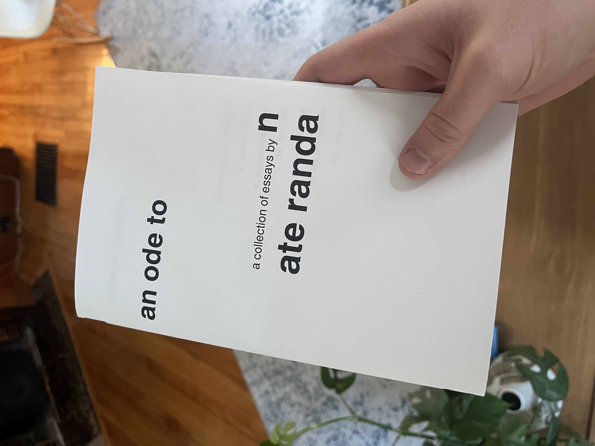

An ode to: a collection of essays
Oct 16, 2024
an-ode-to

I have something exciting to share—the first edition of an ode to is finally complete! It is a collection of seven essays, each about something that has made an impact on my life. I’ve posted two of these already—the ones about Monster Energy and the conversation pit—but the other five are completely new.
You can read the first edition here. Also, if you know me personally and want a physical copy, let me know and I will make one for you.
Hope you enjoy!